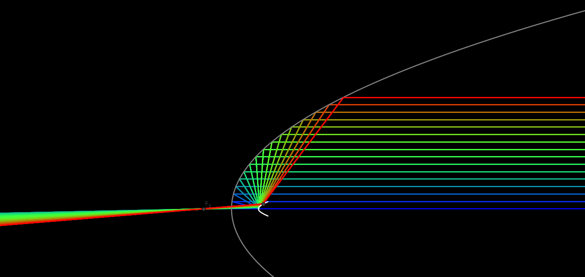

In the following Post, I will tell you about a topic which I have recently studied about; Cassegrain Telescopes. They consist out of a parabolic primary mirror and a hyperbolic secondary mirror. The peabolid and the hyperbolid have the same focus point, which turns out to be really useful, as the incoming light can be bundled in a very short distance.
Incoming light into a telescope can be described as parallel light beams, as the ligthing source is mulitple light years away in most use cases. A reflection in a parabolid object results that all rays that come in parallel to the normal line which goes through the middle orientate themselfs to the focus point of the parabolid. On its way there it gets reflected exactly into the second focus point by a hyperbolic mirror. There the light gets bundled and concentrated into the eye of the observer.
The following image has been created with GeoGebra and shows the function more in detail
